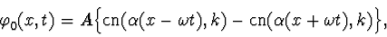
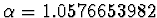
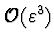
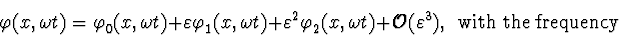
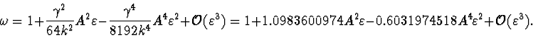

Using massless  theory as an example, we have shown that a uniform
expansion of solutions for quasilinear Klein-Gordon equations can be
constructed even in the main resonance case.
To construct the uniform expansion we have used the Poincare-Lindstedt method and
the nontrivial zero approximation: the function
theory as an example, we have shown that a uniform
expansion of solutions for quasilinear Klein-Gordon equations can be
constructed even in the main resonance case.
To construct the uniform expansion we have used the Poincare-Lindstedt method and
the nontrivial zero approximation: the function


.Thus, using the Jacobi elliptic function cn instead of the trigonometric function cos, we have put the main resonance to zero and constructed with accuracy

the doubly periodic solution in the standing wave form:

Acknowledgement
The authors are grateful to M. V. Chichikina, V. F. Edneral and P. K. Silaev for valuable discussions. S.Yu.V. would like to thank the Organizing Committee of the Fourth International IMACS Conference on Applications of Computer Algebra (ACA'98) for invitation to the Conference, hospitality and financial support.
This work has been supported by the Russian Foundation for Basic Research.